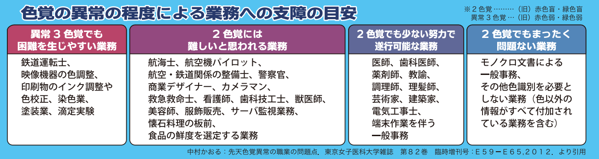
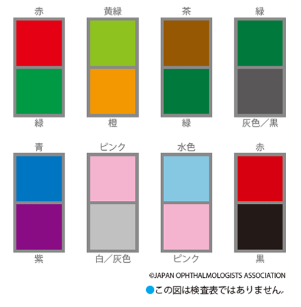

🎨 色覚異常クイズ 🎨
眼科スタッフ向け - 色覚異常の理解を深めよう
🎨 色覚異常クイズ
❌ 間違えた問題:
0問
🆕 未挑戦の問題:
9問
✅ 正解した問題:
0問
📊 全問題数:
9問
今日の3問: 間違い・未挑戦を優先出題
全問モード: 全9問を順番に出題
全問モード: 全9問を順番に出題
問題 1 / 9
正解: 0
問題 1
色覚異常の頻度について正しいものはどれですか？
男性は20人に1人、女性は500人に1人
男性は100人に1人、女性は100人に1人
男性は500人に1人、女性は20人に1人
男性も女性も1000人に1人
解説：日本人では男性の20人に1人、女性では500人に1人の割合で色覚異常の人がいます。例えば男女半々の40人のクラスだと、色覚異常の男子が1人いる計算になります。
問題 2
色覚異常の人が見分けにくい色の組み合わせとして正しいものはどれですか？
黄緑と橙、ピンクと灰色、青と紫
赤と青、黄と緑、白と黒
青と黄色、白と赤、緑と紫
黒と白、赤と黄、青と緑
解説：色覚異常の人は、黄緑と橙、緑と茶や灰色、青と紫、ピンクと灰色などを混同しやすいです。ただし、青系の色と黄色系の色を混同することはありません。
 正常色覚と色覚異常の色の見え方の違い（赤〜黄〜緑が同系色に見える）
正常色覚と色覚異常の色の見え方の違い（赤〜黄〜緑が同系色に見える）
≒
黄緑と橙
≒
ピンクと灰色
≒
青と紫
≒
緑と茶
患者様への説明ポイント：患者様や保護者から「どんな色が見分けにくいの？」と聞かれたら、具体例を挙げて説明しましょう。
正常色覚と色覚異常の色の見え方の違い（赤〜黄〜緑が同系色に見える）
問題 3
1型色覚の人の「赤」の見え方について正しいものはどれですか？
赤が正常な人の10分の1くらいの明るさに見え、暗く感じる
赤が正常な人より明るく見える
赤が青に見える
赤は正常な人と同じように見える
解説：1型色覚の人は赤い光や赤い物体を、正常な人の10分の1くらいの明るさにしか感じません。「赤」は危険信号として使われることが多いため、1型色覚の人は危険信号が見にくいことを自覚することが大切です。
患者様への説明ポイント：1型色覚の方には「赤が暗く見えるので、信号やブレーキランプに特に注意してください」と伝えましょう。2型色覚では赤が暗く見えることはありません。
問題 4
色覚異常の人の日常生活での注意点として正しくないものはどれですか？
青と黄色の区別に特に注意が必要
悪条件下では赤信号と黄信号を間違えることがある
焼き肉の焼け具合が分かりにくいことがある
くすんだ色の靴下には目印をつけておくとよい
解説：色覚異常の人は青と黄色の区別は問題ありません。注意が必要なのは、雨や夕暮れ時に赤信号と黄信号を間違えたり、焼き肉の焼け具合が分かりにくいことなどです。服選びでは一緒に見てあげることも大切です。
 色覚異常の人には焼けた肉と生肉の区別がつきにくい場合があります
色覚異常の人には焼けた肉と生肉の区別がつきにくい場合があります
色覚異常の人には焼けた肉と生肉の区別がつきにくい場合があります
問題 5
色覚異常の遺伝について正しいものはどれですか？
X染色体に遺伝子があり、主に母親から息子へ伝わる
Y染色体に遺伝子があり、父親から息子へ伝わる
遺伝ではなく、生活習慣が原因
常染色体に遺伝子があり、男女同じ確率で遺伝する
解説：色覚異常の遺伝子はX染色体にあります。男性はX染色体を1本しか持たないため、それが異常であれば色覚異常になります。女性は2本のX染色体を持つため、両方が異常でなければ色覚異常にはなりません。
問題 6
色覚異常の保因者について正しいものはどれですか？
女性の10人に1人が保因者である
女性の100人に1人が保因者である
男性にも保因者がいる
保因者は必ず色覚異常の症状がある
解説：色覚異常の保因者は女性の10人に1人の割合です。保因者の女性は自身は色覚正常ですが、息子に色覚異常が遺伝する可能性があります。40人のクラスだと保因者の女子が2人いる計算になります。男性は保因者にはなれず、発症するかしないかのどちらかです。
患者様への説明ポイント：保護者（特にお母さん）が負い目を感じすぎないよう、「女性の10人に1人は保因者で、珍しいことではありません」と伝えましょう。
問題 7
重症色覚異常（2色覚）の人には難しいと思われる業務はどれですか？
航空機パイロット、警察官、看護師、カメラマン
医師、歯科医師、薬剤師、教諭
一般事務、建築家、電気工事士
色覚異常があっても全ての業務に支障はない
解説：重症色覚異常（2色覚）の人には、航空機パイロット、警察官、看護師、救急救命士、カメラマン、食品の鮮度判定業務などは難しいとされています。ただし、医師や薬剤師、教諭などは少ない努力で遂行可能です。

色覚異常の程度別・業務への支障の目安（日本眼科医会）
患者様への説明ポイント：進路相談では「できない仕事」より「工夫すればできる仕事がたくさんある」という前向きな伝え方を心がけましょう。
問題 8
重症色覚異常（2色覚）でも少ない努力で遂行可能な業務はどれですか？
医師、歯科医師、薬剤師、教諭
航空機パイロット、鉄道運転士
映像機器の色調整、染色業
色覚異常があると全ての業務が困難
解説：医師、歯科医師、薬剤師、教諭、理髪師、芸術家、建築家、電気工事士などは、色以外の情報がすべて付加されている業務であり、重症色覚異常でも少ない努力で遂行可能とされています。
問題 9
カラーユニバーサルデザインについて正しいものはどれですか？
青と黄色の組み合わせや、明るさに差をつけたデザインが有効
赤と緑の組み合わせが最も見やすい
色覚異常の人専用のデザインである
文字の色だけを変えればよい
解説：カラーユニバーサルデザインは、青と黄色の組み合わせ、明るさや鮮やかさに差をつけること、白や黒で縁取りをつけること、形を変えることなどが有効です。色覚正常者にも見やすく、高齢者にも優しいデザインです。
✅ 良い例：青と黄色の組み合わせ
情報A
情報B
❌ 悪い例：赤と緑の組み合わせ
情報A
情報B
患者様への説明ポイント：院内の掲示物や案内表示も、赤と緑の組み合わせを避け、青と黄色や明暗の差をつけると、色覚異常の患者様にも見やすくなります。

色覚異常の人が混同しやすい色の組み合わせ（日本眼科医会）